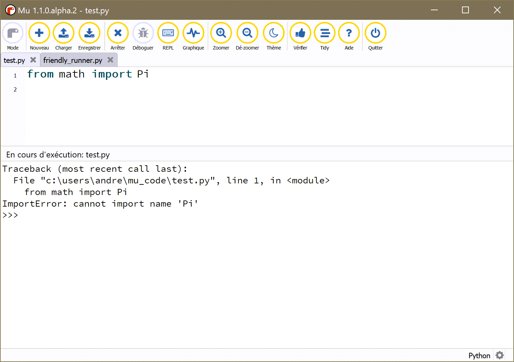

Using with Mu¶
Mu is a fantastic editor for absolute beginners. Its design philosophy is to enable beginners to download a single program that comes with everything they need to begin their programming journey.
It is possible that, in the future, Friendly-traceback might be incorporated inside Mu, available at the click of a button. For now, it is possible to use Friendly-traceback in the same way as we described it for IDLE or Visual Studio Code. We repeat the information here, since we invited Mu users to come directly to this page - given that installing Friendly-traceback has to be done differently with Mu.
Installation¶
I assume that you have installed Mu on your computer. Mu picks up the language to use from the computer default settings, which explains why French appears on the screen capture below. However, that information is not available to Friendly-traceback.
After you start it, you should see a gear icon at the bottom right corner.

If you click on it, it will bring the following dialog.
Click on the triangular “arrow” until the Third Party Packages tab is shown.

Enter “Friendly-traceback” and click “ok”. Friendly-traceback should be installed. The version installed should be 0.1.8 or newer. Newer versions are likely to also install some additional packages.

Before using Friendly-traceback with Mu¶
I have created a test module, called test.py, that raises and exception. First, I show what happens when I run test.py with Mu.
{kind=link}
Using Friendly-traceback with Mu¶
To use Friendly-traceback with Mu, I need to use a second, very short program, and run that program instead.

As should be expected, a traceback is shown, with a hint added.
By typing why() at the prompt, Friendly-traceback gives me
more information.
You likely will not be surprised to know that I can ask Friendly-traceback to provide explanations in French instead:

More information¶
To find out what you can do in addition to using why(), go back and have
a look at Console basics. Then, go on to the following section to
see everything that there is to know about using with any editor as we
explain some other features not covered here.